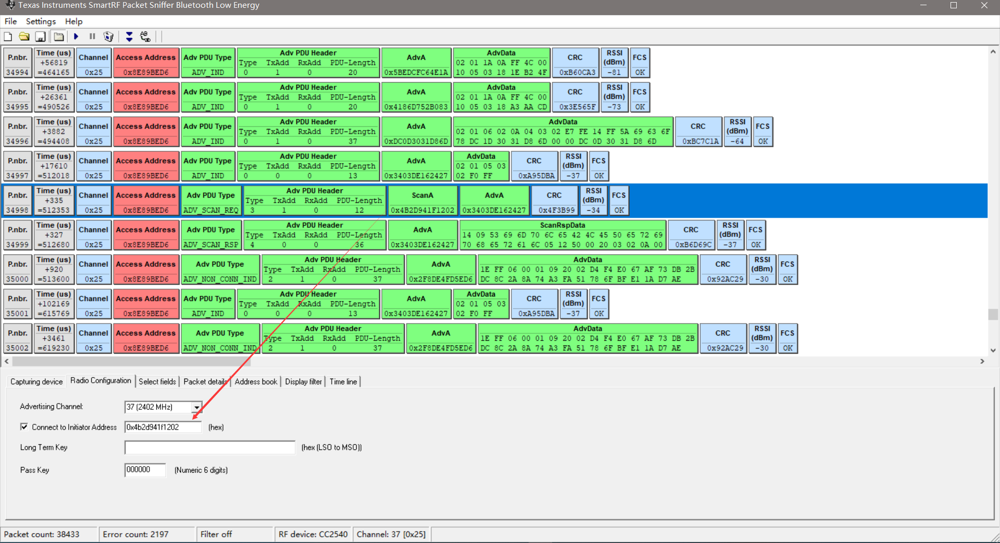
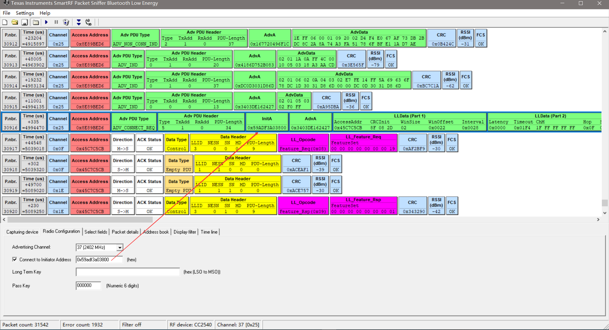
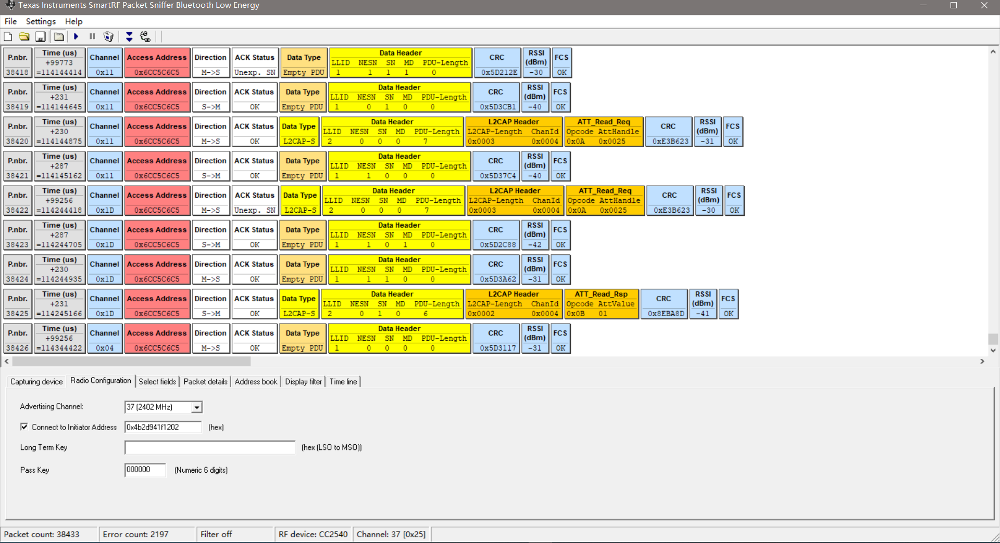

蓝牙嗅探器空中包抓去
SmartRF Protocol Packet Sniffer
SmartRF™ Packet Sniffer User’s Manual
How to use a BLE sniffer - Part 1 (Advertisement data)
How to use a BLE sniffer - Part 2 (Connections) by reverse engineering a Bluetooth lightbulb
如何使用CC2540 USB-Dongle进行抓取蓝牙通讯数据包
打开Android手机BLE Scanner应用软件，开启蓝牙扫描，获取手机的蓝牙Master地址，这个地址貌似会变： 
设置手机蓝牙连接地址，发现设备连接之后会自动跳到数据通信监听： 
连接的时候因为3个通道时随机选择一个，所以多连几次就可以连接到了；
获取Characteristic 1 Value： 